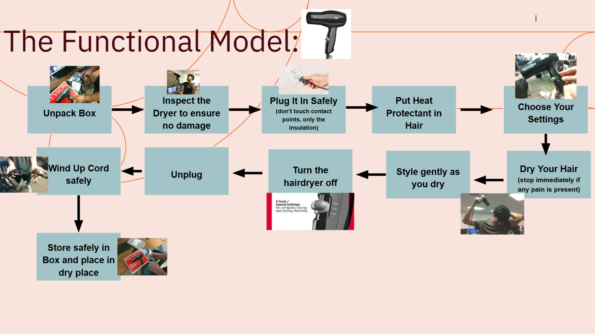
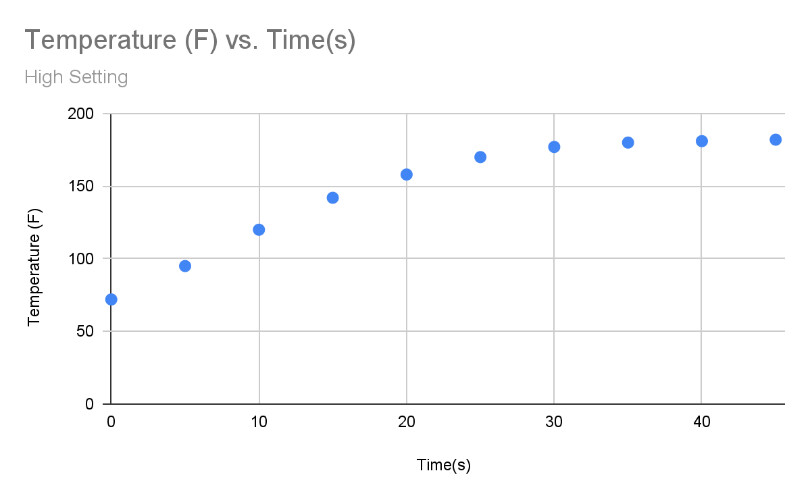
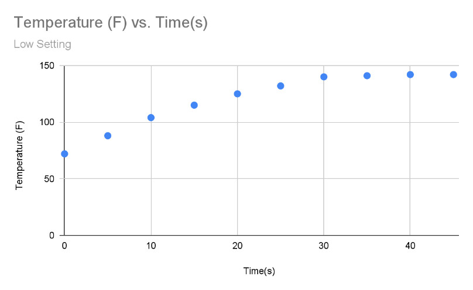
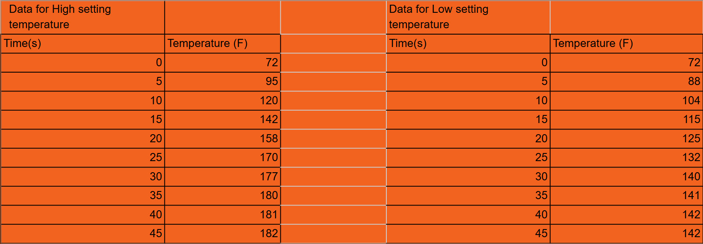
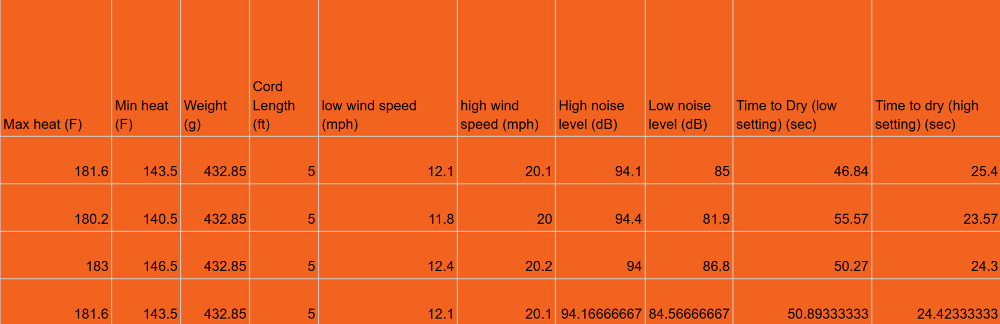

Every component of the hair dryer, fully disassembled and labeled.
Overview
To understand how a common household product is actually engineered, I tore down a Revlon hair dryer down to its individual components, mapped out how a user interacts with it from unboxing to storage, and then ran a series of physical tests to quantify its real-world performance on both heat settings.
Functional Model
Before opening the dryer up, I mapped out the complete user interaction flow: from unpacking and inspecting the dryer, through safe plug-in, styling, and shutdown, to safely coiling the cord and storing it. This functional model frames every design decision inside the product: safety warnings at the outlet, clearly marked heat settings, and a cord long enough to be usable but easy to wind up for storage.

Disassembly
Taking the dryer apart revealed the core subsystems working together: a DC motor spinning a fan to move air, resistive coils wound around mica boards to generate heat, a switch PCB and buttons to control the two heat/speed settings, and a shell that channels airflow while insulating the user from the internal electronics. Every wire, screw, and bracket had a clear, deliberate purpose.
Testing Setup
With the dryer reassembled, I ran repeated trials on both the high and low settings, measuring exit air temperature over time, wind speed, noise level, and total time to dry. Each metric was logged across four trials and averaged for a final result.


Exit air temperature over time, logged every 5 seconds until the dryer reached a steady-state temperature.
Results
The high setting reached a noticeably higher max temperature and moved air much faster than the low setting, cutting dry time roughly in half, but at the cost of significantly more noise. The low setting stayed cooler and quieter, trading speed for gentler, more controlled drying.
Raw Test Data
Temperature was logged every 5 seconds on both settings until the dryer reached a steady-state temperature:

Each performance metric was measured across four separate trials and averaged for the final results:

What I Learned
This project showed me how much deliberate trade-off analysis goes into even a simple household appliance. The high and low settings aren't just "more" and "less"; they represent a genuine engineering compromise between speed, heat exposure, and noise, and every internal component exists to serve a specific piece of that trade-off. Taking careful, repeated measurements also reinforced why averaging multiple trials matters: individual runs varied more than I expected before I averaged them out.